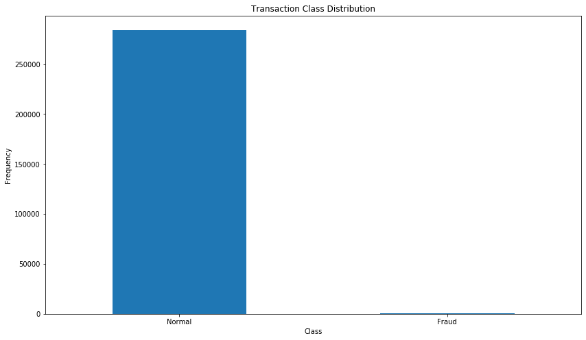
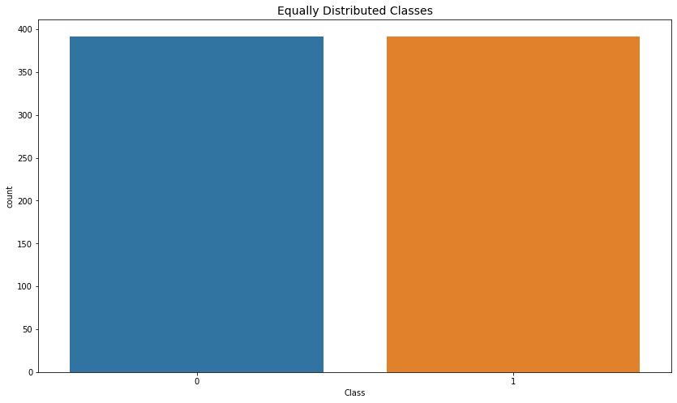
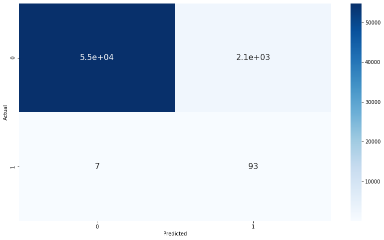

Credit Card Fraud
Using dataset from Kaggle.com
and applying machine learning concepts
to sieve out fraudulent transactions.
We will first look at how we can measure the performance of the model and the types of models suitable for an imbalanced dataset. The first part will explore different options available in detecting the fraudulent credit card transactions.
Performance Measures
Confusion Matrix-based Evaluation
- Accuracy
-
Accuracy is not the best way to measure the performance of a machine learning model for an imbalanced dataset. For example, if a dataset only has 0.1% fraud data, blindly labeling every data point as fraud will yield 99.9% accuracy. Other metrics should be used to paint a better picture of the actual performance.
- Recall
-
To ensure that no fraudulent transaction get misidentified as non-fraudulent, the recall can be maximised. This is an interesting metric that can be used. However, there will be a trade-off between recall and precision.
- F1 Score
-
To address the trade-off mentioned earlier, the F1 score was devised to calculate the harmonic mean between precision and recall and therefore gives equal importance to precision and recall.
Parametric Evaluation
- ROC Curve
-
The axes consists of true positive rate (i.e. recall) for the y-axis and false positive rate for the x-axis. Both axes are proportion of the class they are representing: positive for the true positive rate and negative for the false positive rate. Therefore, the ROC curve is insensitive to unbalanced datasets.
- Precision-Recall Curve
-
The precision-recall curve shows the tradeoff between precision and recall for different threshold. A high area under the curve represents both high recall and high precision, where high precision relates to a low false positive rate, and high recall relates to a low false negative rate.
Methods
Sampling
- Undersampling
-
Undersampling consists in rebalancing the dataset by taking less examples from the majority class in order to match the absolute number of examples of the minority class. This can potentially lead to loss of information. But if the examples of the majority class are near to others, this method might yield good results.
- Oversampling
-
Oversampling is upsampling the minority class to make it equal in size to the majority class. The problem is where and how to generate these new points. This may lead to overfitting as the points generated may not be true representatives of the actual minority class.
Model-based
- Isolation Forest
-
Isolating anomaly observations is easier because only a few conditions are needed to separate those cases from the normal observations. On the other hand, isolating normal observations require more conditions. Therefore, an anomaly score can be calculated as the number of conditions required to separate a given observation.
- Local Outlier Factor
-
This algorithm is an unsupervised outlier detection method which computes the local density deviation of a given data point with respect to its neighbors. It considers as outlier samples that have a substantially lower density than their neighbors.
Results
Without Undersampling
 The dataset is highly unbalanced, the positive class (frauds) account for 0.172% of all transactions. Out of 284,807 transactions, there are only 492 fraud cases. For computational purposes, only 10% of the data will be used but the percentage of frauds will remain the same.
Grid Search
Rank
Mean
Std Dev
max_depth
n_estimators
1
0.699
0.194
3
20
2
0.541
0.286
5
1000
3
0.526
0.273
3
1000
4
0.521
0.274
3
180
5
0.501
0.238
5
180
| Rank | Mean | Std Dev | max_depth | n_estimators |
|---|---|---|---|---|
| 1 | 0.699 | 0.194 | 3 | 20 |
| 2 | 0.541 | 0.286 | 5 | 1000 |
| 3 | 0.526 | 0.273 | 3 | 1000 |
| 4 | 0.521 | 0.274 | 3 | 180 |
| 5 | 0.501 | 0.238 | 5 | 180 |
A grid search was ran over some possible scenarios using recall as the scoring and the
top five were recorded in a table. A confusion matrix was plotted and out of the actual
frauds, 27% of them were misidentified as non-fraudulent.
Undersampling
 In this technique, majority class was undersampled to match the minority class. Random sample of non-fraud class were taken to match number of fraud samples. This makes sure that the training data has equal amount of fraud and non-fraud samples such that the ratio is 1:1.
Grid Search
Rank
Mean
Std Dev
max_depth
n_estimators
1
0.940
0.0256
3
180
2
0.940
0.0274
3
1000
3
0.937
0.0277
3
20
4
0.936
0.0286
2
180
5
0.934
0.0220
5
180
| Rank | Mean | Std Dev | max_depth | n_estimators |
|---|---|---|---|---|
| 1 | 0.940 | 0.0256 | 3 | 180 |
| 2 | 0.940 | 0.0274 | 3 | 1000 |
| 3 | 0.937 | 0.0277 | 3 | 20 |
| 4 | 0.936 | 0.0286 | 2 | 180 |
| 5 | 0.934 | 0.0220 | 5 | 180 |
 This time, accuracy scoring was used to run a grid search and the top five were tabulated. A confusion matrix was plotted and out of the actual frauds, only 7% of them were misidentified as non-fraudulent, much better than the previous.
However, there is also an increase in false positives. This means that there is a balance between better customer experience and better fraud detection.
Outlier Detection Models
Without having to undersample, even with an imbalanced dataset, there are models that can detect these fraud cases. In this example, isolation forest and local outlier detection will be explored. The isolation forest model is based on decision trees while the local outlier detection is based on k-nearest-neighbour.
Isolation Forest
Number of errors: 71
Accuracy: 0.998
| Class | Precision | Recall | F1 Score | Support |
|---|---|---|---|---|
| 0 | 1.00 | 1.00 | 1.00 | 28432 |
| 1 | 0.28 | 0.29 | 0.28 | 49 |
Local Outlier Factor
Number of errors: 97
Accuracy: 0.997
| Class | Precision | Recall | F1 Score | Support |
|---|---|---|---|---|
| 0 | 1.00 | 1.00 | 1.00 | 28432 |
| 1 | 0.02 | 0.02 | 0.02 | 49 |